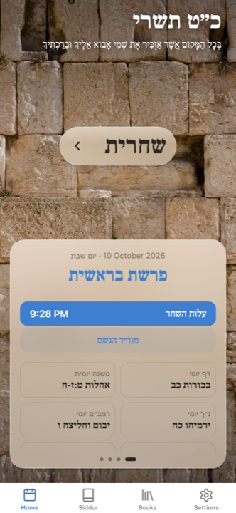

Siddur One
סידורA siddur that knows what day it is. It shows you what you're actually saying today, for your nusach, so you aren't flipping pages looking for Ya'aleh V'yavo or working out Tachanun on your own. It started as an Android app more than ten years ago and has been rewritten more times than I'd like to admit.
- Ashkenaz · Sfard · Edot HaMizrach · Ari
- Zmanim & home screen widget
- Apple Watch
- 9 languages
